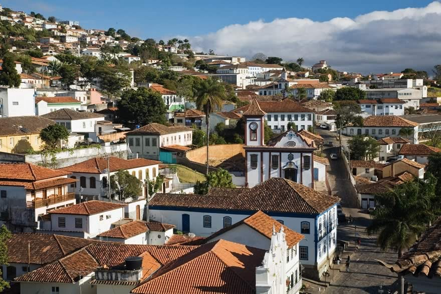
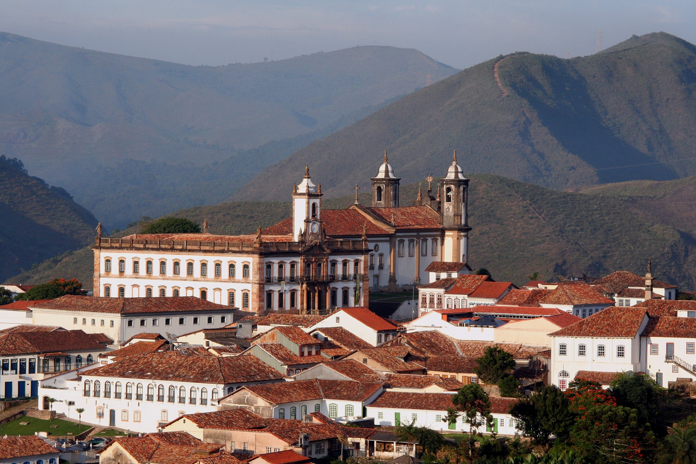
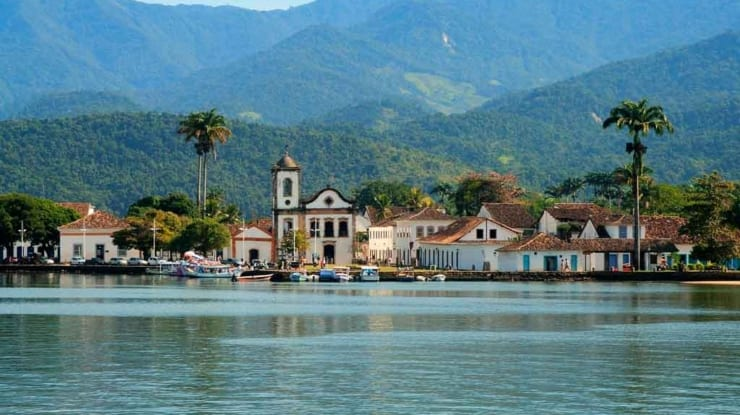

A Dream Company quer levar suas viagens para o próximo nível! Somos especialistas em viagens e estamos sempre prontos para criar experiências únicas e surpreendentes para você. Imagine como seria fácil encontrar passagens aéreas para os destinos mais incríveis do mundo em um só lugar? Como agência de viagens, oferecemos uma ampla gama de opções de voos para garantir que você possa explorar os lugares dos seus sonhos com conforto e comodidade. Além disso, nossa agência de viagens online oferece uma ampla seleção de hotéis de qualidade para que você possa escolher a acomodação que melhor se adapta às suas necessidades. Quer se trate de uma luxuosa estância balnear, uma pitoresca casa de férias ou um encantador hotel no centro da cidade, temos opções que se adequam ao seu estilo e orçamento.
Diamantina, conhecida como Arraial do Tijuco, foi o maior centro de mineração de diamantes do mundo ocidental no século XVIII. Tanta riqueza permitiu que a região se transformasse em uma das mais refinadas aristocratas do período colonial. Parte dessa história envolveu o uso extensivo de mão de obra escrava e é lembrada pela existência de Chica da Silva, mulher que foi escravizada e liberta e parte importante da cidade. A mineração de diamantes perdeu fôlego em meados do século XIX e outras atividades tomaram conta de Diamantina, inclusive a produção têxtil na paradisíaca Vila do Biriri. Hoje, o local é uma das principais atrações turísticas da região. Cercado por uma vegetação exuberante, cachoeiras e poços, o Parque Nacional do Biriri exemplifica o compromisso de Diamantina não só com o turismo histórico, mas também com a aventura na natureza.
Ouro Preto foi a primeira cidade do Brasil e uma das primeiras cidades do mundo a ser declarada Patrimônio da Humanidade pela UNESCO, conquistando esse status em 1980. Conhecida por sua requintada arquitetura colonial, a cidade foi construída por artistas e escravos durante seu apogeu. ciclo de ouro. O grande valor histórico como palco da Inconfidência Mineira e sua expressiva bagagem histórica não são os únicos atrativos da cidade, que se beneficia de sua rica atividade cultural. Uma grande floresta nativa. A sua majestosa e sossegada igreja contrasta com o ambiente festivo e alegre do movimento contagiante de estudantes e turistas, sempre dispostos a festejar nas encostas da sua famosa república ou cidade.
São João Del Rei foi fundado em 1704 como Arraial Novo Rio das Mortes. Em 1713, Arraial recebeu o nome de Vila de São João del-Rei como um presente para D. João V de Portugal. Um traço distintivo da nossa cidade são as igrejas barrocas do século XVIII, tais como: Catedral-Basílica do Pilar (construída em 1721), Igreja do Rosário (construída em 1720), Igreja do Carmo (fundada em 1733), Igreja de Nossa Senhora das Mercês (fundada em 1769) e a Igreja de São Francisco de Assis (fundada em 1774) pelo maior barroco do país. Projetado e decorado por um dos artistas, Aleijadinho. Para deleite de moradores e turistas, a cidade preservou uma tradição secular: os sinos das igrejas são tocados pelos sineiros da cidade. Esse costume a torna a "Cidade dos Sinos" e "Onde os Sinos Falam".
Paraty, nome de um peixe local, está localizada na costa sudeste do Brasil, 200 quilômetros ao sul do Rio, tendo como pano de fundo a Serra da Bocaina. O centro desta cidade colonial é um Monumento Nacional, com edifícios bem preservados nas ruas de pedestres. Pegue um barco pela baía até as muitas ilhas e baías próximas. Explore plantações de cana-de-açúcar, caminhe ou pegue um trem pela Mata Atlântica. Fique de olho nos macacos vagando pelas ruas de paralelepípedos.
Veja nossas taxas de serviços
| Serviços | Valores |
|---|---|
| Hotel (Café da manhã incluso) | R$ 250,00 |
| Aluguel de Carro | R$ 450,00 |
| Passeios Turisticos | R$ 350,00 |